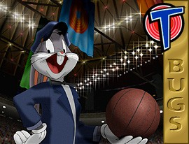

© 1996 Warner Bros.
© 1996 Warner Bros.
The RabbitBugs Bunny, the linchpin of the Looney Tunes, has been called everything from "classic" to "perennial" to "an American institution" to "one of our national heroes"--and "wascally wabbit," "long-eared galoot," and a lot of other things besides! But most of us just like to call him Bugs.
Now he's starring in Space Jam, Warner Bros.' first original feature film graced by Bugs in a leading role--opposite Michael Jordan, no less!
From the time he first asked Elmer Fudd "What's up, Doc?" right up to the release of Space Jam, Bugs has been both sophisticated and naive, innocent and guilty, Child of Nature and Street-Tough Smart Guy, fool and hero, one of the most rounded and all-around characters in the history of film, a multi-faceted gem.
Didn't matter. Bugs went on being Champ, no matter what he did.
© 1996 Warner Bros.